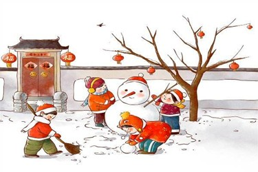

春节：辞旧迎新，万象更新
春节，又称 “过年”，是中华民族最隆重、最热闹的传统节日，通常在农历正月初一，但其庆祝活动往往从农历腊月二十三（小年）就已拉开序幕，一直持续到正月十五元宵节，历时近一个月。 春节的起源可追溯至上古时期的 “岁首祭神祭祖” 活动，经过数千年的发展，形成了如今丰富多彩的习俗。在小年这一天，人们会 “祭灶王”，传说灶王爷会在这一天上天向玉皇大帝禀报各家善恶，因此人们会准备糖瓜、关东糖等甜食，希望灶王爷 “上天言好事，回宫降吉祥”。同时，小年也是 “扫尘日”，家家户户都会彻底打扫房屋，寓意 “除陈布新”，清除一年的尘埃与晦气，迎接新年的到来。 随着除夕的临近，年味愈发浓厚。除夕当天，最重要的习俗便是 “贴春联”“贴福字” 和 “挂灯笼”。春联以对仗工整、简洁精巧的文字描绘美好形象，抒发美好愿望，红色的春联贴在门上，瞬间营造出喜庆的氛围；“福” 字则常常倒贴，取 “福到” 的谐音，象征着福气降临。傍晚时分，全家老小会团聚在一起，吃上一顿丰盛的 “年夜饭”，年夜饭的菜品有着诸多讲究，比如鱼象征 “年年有余”，饺子象征 “招财进宝”（因其形状似元宝），年糕象征 “步步高升”，每一道菜都承载着人们对新年的美好期许。 除夕夜，还有 “守岁” 的习俗，全家人围坐在一起，聊天、看春晚，等待新年钟声的敲响。当零点到来，鞭炮齐鸣、烟花绽放，人们用热烈的声响辞旧迎新，祈求新的一年平安顺遂。大年初一，人们会穿上新衣，走亲访友，相互拜年，道一声 “新年快乐”，传递着浓浓的亲情与友情。